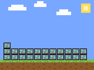

California task force dismantles a Fresno County meth conversion lab, seizing 2,500 pounds and arresting 15
2,500 lbs meth (1,134 kg)Fresno County, California15 arrested
California's Attorney General announced Sept 17 that a joint operation combining the state Department of Justice, FBI, DEA, Homeland Security Investigations and several Central Valley sheriff's offices raided multiple sites tied to a methamphetamine conversion operation in Fresno County, seizing more than 2,500 pounds of crystal methamphetamine and over 500 gallons of meth in liquid solution — enough, officials said, to have yielded roughly 2,000 more finished pounds. Fifteen people were arrested and agents recovered 21 firearms and about $20,000 in cash; the U.S. Attorney's Office for the Eastern District of California is prosecuting, with nine alleged conspirators already charged and indictments secured against three more.
